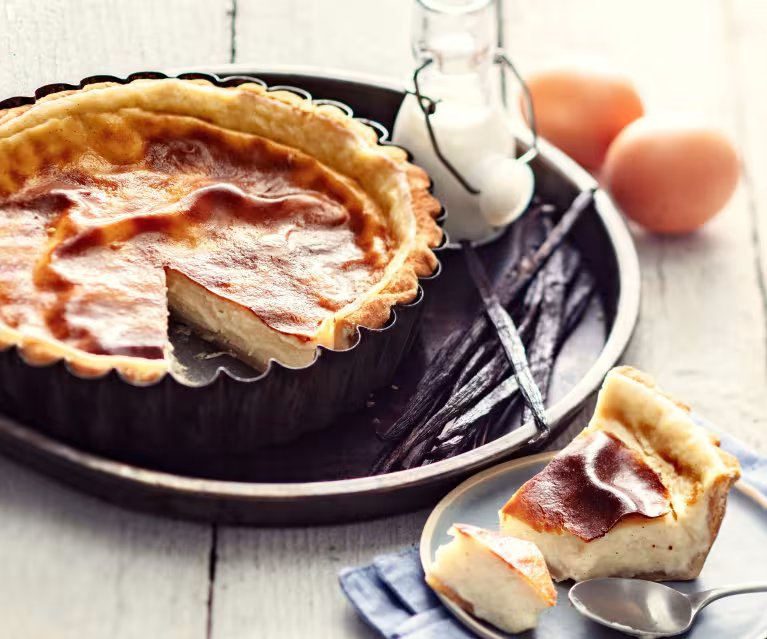

Flan pâtissier à la vanille sans pâte
Ingrédients
10×
- 800 g de lait
- 2 gousses de vanille
- 200 g de sucre
- 4 oeufs
- 200 g de crème liquide
- 90 g de fécule
- beurre
- farine

Préparation
Étape 1
Mettre 800 g de lait et 2 gousses de vanille fendues et grattées dans le bol, chauffer 8 min/90ºC/vitesse 1. Transvaser et retirer les gousses.
Étape 2
Mettre 200 g de sucre, 4 oeufs, 200 g de crème liquide et 90 g de fécule dans le bol, mélanger 30 sec/vitesse 3 en versant le lait chaud sur les couteaux en marche.
Étape 3
Cuire 8 min/98ºC/vitesse 3. Transvaser et laisser refroidir 25min.
Étape 4
Préchauffer le four à 180ºC. Beurrer et fariner un moule à bords hauts avec du beurre et de la farine.
Étape 5
Verser la préparation, lisser et cuire 45 à 55min jusqu’à ce que le dessus soit bien doré. Laisser refroidir complètement avant de déguster.
Conseils
- Version sans pâte (la recette d’origine utilise une pâte brisée).
- Privilégier de la vanille Bourbon.
Résumé
800 g de lait
2 gousses de vanille
chauffer 8 min/90ºC/vitesse 1
200 g de sucre
4 oeufs
200 g de crème liquide
90 g de fécule
mélanger 30 sec/vitesse 3
Cuire 8 min/98ºC/vitesse 3 laisser refroidir 25min
beurre
farine
Préchauffer 180ºC
cuire Laisser refroidir complètement